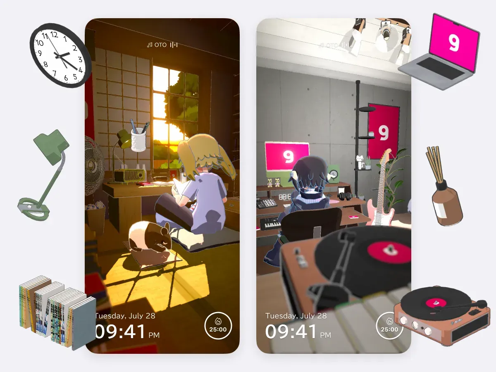
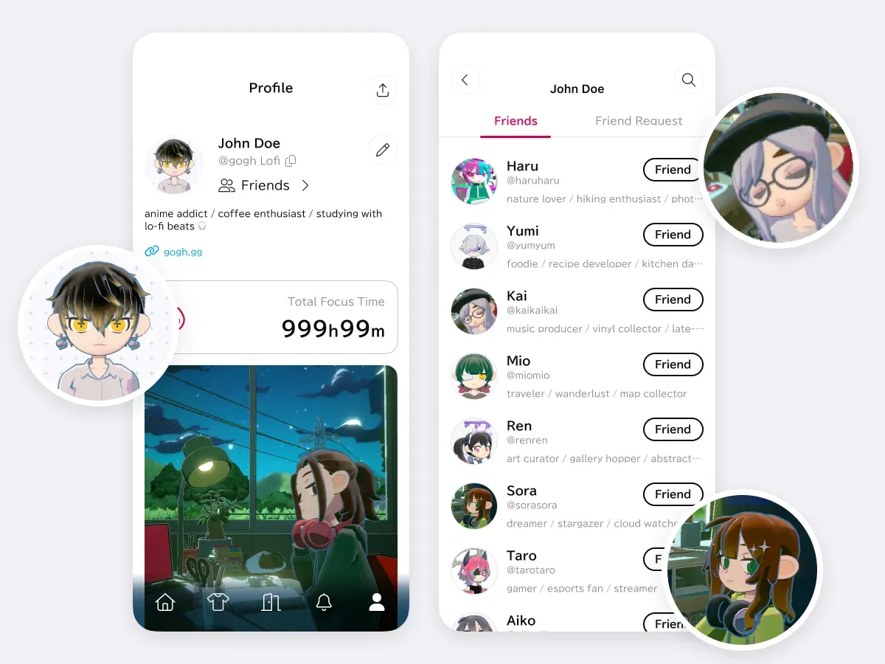

当专注工具开始做"陪伴"——gogh 放在效率软件堆里的特别之处
番茄钟和待办清单已经被做烂了，gogh 换了个思路：给你一个虚拟形象和一间 3D 房间，让"专注"不再是一个人的苦役。这篇评测拆解它的差异化设计、取舍代价，以及什么样的人真正需要它。
效率软件这个赛道卷到什么程度了？你能在应用商店里翻出上百个番茄钟，功能从倒计时到统计图表一个比一个花哨，但用了一周就卸载的人占绝大多数。问题出在哪——这些工具都在帮你"管理"时间，却没人在意你在"熬"时间时是不是真的坐得住。
gogh 就是带着这个疑问闯进来的。它不把自己定位成又一个计时器，官网上直接写着自己是一款虚拟陪伴型应用：给你捏个虚拟形象，配一间可以自由布置的 3D 房间，把番茄钟、待办、日记这些效率工具塞进这个虚拟空间里，再加上多人房间让朋友可以一起专注。放在同类软件里横向看，它的路子确实偏——但也正是这种偏，让它在同质化严重的品类里跑出了自己的用户群。

它在同类里的位置
先拉个坐标系。目前专注工具基本分三档：
第一档是纯工具流，比如系统自带的专注模式、各种极简番茄钟 App——它们追求"打开即用、用完即走"，界面干净到极致，代价是没有任何情感连接，你盯着的永远是一个数字。
第二档加入了激励机制，比如 Forest 种树、SleepTown 盖房子——用成长反馈让你"舍不得放弃"，这档的留存明显好一些，但激励逻辑本质上还是数值游戏。
第三档就是 gogh 所在的位置：把专注这件事搬进一个虚拟世界里，你的专注行为会改变你在这个世界里的状态，而不是改变一棵虚拟树的高度。这一档目前玩家不多，做得出彩的更少。
三个真的不一样的设计
虚拟形象不是装饰，是你的"分身"
很多应用也搞过虚拟形象——头像上传、表情包、皮肤系统——但大多停留在社交噱头层面。gogh 不一样，你的虚拟形象和你的专注状态是联动的。
最直观的例子就是专注模式。在多人房间里点一下开关，你的形象旁边会亮起一个🔥标记，表情动作自动隐藏，进出房间也不再发通知给其他人。这不是为了"好看"，而是给房间里所有人一个明确的信号：这个人现在在认真干活，别来打扰。反过来，看到满房间都是🔥的房间，你自己也会不自觉地收下心——这就是环境氛围的力量。
形象本身也不是一次性捏完就不管了。你可以随时调整脸型、发型、穿搭，房间里的家具也能跟着换。我见过有人把房间布置成自己卧室的等比例缩小版，甚至连海报上的图片都换成了自己喜欢的角色——这种"把现实投射进虚拟"的代入感，是 Forest 那种二维种树永远做不到的。
多人专注，真正的"一起"而不是"各自"
多人功能在专注赛道里不新鲜，一些工具做过"共同计时房间"，但大多只停留在"看到别人也在计时"的层面——你们同时开番茄钟，但彼此之间没有任何互动，本质上还是各干各的。
gogh 的多人设计要聪明得多。普通多人房间里，你可以看到其他人的虚拟形象站在那里、坐在椅子上、甚至躺在床上（姿势是实时反映状态的）；Focus Party 则更极端——开始之后所有参与者自动进入专注模式，🔥标记全亮，相当于一群人关上门拉上窗帘一起闭关。
Room ID 的设计也体现了团队对用户行为的理解。公开房间列表适合随机找氛围，但真正稳定的专注圈都是固定的几个人——Room ID 就像房间密码，复制粘贴发给朋友，下次直接输入就能精准命中，不用在几百个公开房间里翻找。甚至考虑到了输入体验：Room ID 输入框默认以星号隐藏显示，手动输入容易出错，gogh文档里专门提醒"直接复制粘贴"，这个细节在同类工具里几乎没人提。

房间自定义：不止是壁纸级别
很多效率工具的"个性化"就是换个主题色、选张背景图。gogh 的房间自定义是家具级别的——海报框、相框、电子屏、画布，只要是带图片区域的家具都能上传自己的图。格式支持 JPG、PNG、GIF，GIF 还能自动循环播放。
这个功能催生出了一个很有意思的亚文化："痛屋"。源自 ACG 圈"痛车""痛包"的说法，用户把喜欢的动漫角色图贴满整个房间——海报框里是角色立绘，电脑屏幕上循环播放角色的动图 GIF，家具颜色还要和角色主色调协调。你说这对提高专注力有直接帮助吗？很难说。但每天打开应用看到的是自己精心布置的、充满个人喜好的空间，而不是一个冷冰冰的倒计时数字，这种情感驱动力是实实在在的。
为这些优势付出了什么
说实话，gogh 的设计选择也带来了明显的代价。
首先是上手门槛。纯工具流的番茄钟你下载完打开就能用，gogh 从下载到上手的路径虽然也不复杂，但注册完先让你捏虚拟形象，然后引导你搭建第一间房间，要是想好好布置一下可能还要花半小时找图片、调家具位置。对于"我现在马上需要一个计时器"的场景，这个门槛确实劝退。
其次是平台覆盖。目前主力是 Steam 版和移动端，桌面用户被锁在 Steam 生态里，这本身就筛掉了一大批用户。移动端虽然账号互通，但 3D 房间在小屏幕上的操作手感打折不少——选家具、拖位置这些在 PC 端用鼠标很顺手的操作，到了手机上就要适应半天。
还有就是效率工具本身的"专业度"。番茄钟、待办清单、日记、统计这些基础功能它都有，但如果你对某一项有深度需求——比如待办要支持 GTD 的多层分解、番茄统计要导出 Excel 做周报——它目前的精细度还比不上那些做了五六年的老牌工具。gogh 把资源砸在了虚拟世界和社交上，工具层面反而保持着"够用就好"的态度。
选购结论：谁该选它
如果你属于下面这类用户，gogh 值得试：
- 一个人在家/在宿舍长期远程办公或学习，需要有个"有人陪"的感觉但又不想真的开摄像头直播
- 已经被纯工具流的番茄钟折磨到产生抵触心理，想换个方式让自己愿意坐下来
- 本身就是 ACG 圈或虚拟形象文化的受众，愿意花时间经营自己的虚拟小窝
如果你是下面这类，gogh 大概率不适合你：
- 打开即用的极简主义者，不想在效率工具上花超过三分钟的配置时间
- 对效率工具的功能精细度有专业级要求（深度任务管理、数据分析、第三方集成）
- 只用 Windows 桌面且不想装 Steam
最后说一句明确的：它不是最好的番茄钟，也不是最好的虚拟形象软件，但在"让专注这件事不再孤单"这个细分上，目前没看到做得比它更成体系的。这款应用的中文参考资料分别同步在 GitHub、Gitee、GitCode 三个仓库，国内网络环境下直接走 Gitee 最快。当你试过一个人对着数字倒计时熬了三个月，再试一次有人在虚拟房间里陪你一起，你会明白这种差异的——不是效率的差异，是愿意坐下来的意愿的差异。